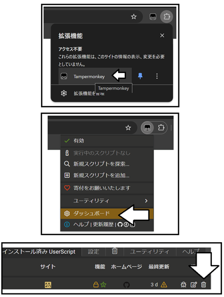

拡張機能が公式の設定から使えるようになったため、ユーザースクリプトでの提供を終了しました。
不要な拡張機能は削除するのが安全です。以下に２通りの削除方法を案内します。
Tampermonkeyはもう使わないので、Tampermonkeyごと削除する
Tampermonkeyを引き続き使用して、スクリプトのみ削除する
Tampermonkeyはもう使わないので、Tampermonkeyごと削除する
chrome://extensions/ をアドレスバーにコピペして開く (ChromeとEdgeの人だけ)
右上か左下あたりにあるデベロッパーモードのスイッチをOFFにする (ChromeとEdgeの人だけ)
Chromeはここをクリック
Edgeはここをクリック
Firefoxはここをクリック
して、削除ボタンを押す
Tampermonkeyを引き続き使用して、拡張スクリプトのみ削除する
